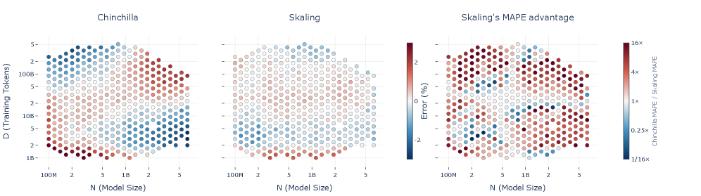
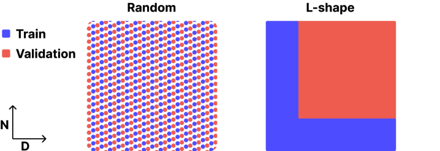

Skaling: A Coupled N–D Scaling Law and 10x-Cheaper Experiment Grids
TL;DR
- "Skaling: Chinchilla's Exponents Meet Kaplan's Coupling" (arXiv 2608.07222; Mathurin Videau, Badr Youbi-Idrissi, David Lopez-Paz, Kartik Ahuja — Meta) diagnoses a structural flaw in the additive Chinchilla law: it forces \(\partial^2 L/\partial N \partial D = 0\), but the measured mixed derivative is non-zero across two full training grids, producing a saddle-shaped residual that grows toward the grid corners where \(N\) and \(D\) are most imbalanced.
- The fix is one parameter: \(L(N,D) = (A/N^{\alpha} + B/D^{\beta})^{k} + E\) — Chinchilla's independent inner exponents with Kaplan's outer coupling. It reduces MAPE 1.5–3x across interpolation and every extrapolation regime (e.g., far extrapolation on their SK-Grid: 5.17% → 0.70%), with fitted \(k \approx 0.31\text{–}0.45\), far from the additive case \(k=1\).
- Because the coupled form is anchored by grid edges rather than the interior, an "L-shape" experiment design — sweep \(D\) on the smallest models, sweep \(N\) at the shortest horizons — recovers full-grid accuracy with ~10x less profiling compute, and beats full-grid Chinchilla; the same law wins compute extrapolation to the most expensive runs (pooled MAPE 0.60% vs. 2.34%, a 3.9x reduction).
Why this matters
Scaling laws are the instrument panel for every serious pretraining budget decision, and this paper argues the default instrument is miscalibrated exactly where you need it: predicting big runs from small ones (extrapolation) and pricing over/under-trained regimes (imbalanced \(N, D\)). The practical payoffs are concrete. First, allocation: Chinchilla's near-flat optimal token-to-parameter ratio vs. Skaling's decreasing one diverge to a ~100x discrepancy in prescribed ratio at frontier compute on the Farseer data — that is not a rounding error in anyone's budget. Second, experiment cost: if the L-shape result holds up, the standing practice of dense log-spaced grids (whose cost is dominated by the expensive corner) is ~10x wasteful, which changes who can afford to fit their own laws. Third, it's a tidy scientific story: the field resolved the Kaplan-vs-Chinchilla dispute by fixing fitting artifacts (parameter counting, warmup, optimizer tuning) while keeping the additive form; this paper says the form itself was also wrong, and that Kaplan's outer exponent was worth keeping.
The core idea
Ask the loss surface directly whether \(N\) and \(D\) interact. Using moving-least-squares derivative estimates on log-spaced grids, first-order projections look nearly separable (same-variable slopes \(\alpha_N \approx \alpha_D \approx -1.3\); cross-slopes \(\gamma_N \approx 0.13\), \(\gamma_D \approx 0.07\)). The decisive test is the mixed derivative, since any additive law \(L = f(N) + g(D) + E\) makes it identically zero. Empirically it is non-zero everywhere and decays as a power law (exact LaTeX from the paper):
with predominantly negative sign: scaling \(N\) and \(D\) together lowers loss more than scaling either alone — a synergy additive forms cannot express. The proposed law interpolates between the two classic forms:
where \(A, B\) are amplitudes, \(\alpha, \beta\) independent per-axis decay exponents, \(E\) the irreducible loss, and \(k\) the single new coupling exponent: \(k=1\) recovers Chinchilla exactly; \(k \neq 1\) reinstates a Kaplan-style interaction. Kaplan's own form, for contrast (exact from the paper),
ties the inner exponents through a ratio; Skaling unties them while keeping the outer exponent. Since \(k>0\), the law stays monotone decreasing in both variables, and minimizing under a compute constraint reduces to the same stationarity condition as Chinchilla — the compute-optimal allocation keeps its closed form (though the fitted parameters, and hence the recommended ratio, differ).

Figure 1 from the paper: the additive law's boundary-concentrated bias, removed by one coupling exponent.How it works
Data. Two grids: Farseer (404 \((N,D)\) configs, 25 model sizes 100M–6.4B, 55 data budgets 1B–512B tokens, up to \(4.1\times10^{21}\) FLOPs, plus 7 far-extrapolation runs at 2.3B–25B params) and SK-Grid, their own 134-config grid (15 sizes 134M–4.9B, 16 budgets 316M–316B tokens), trained with StepLaw near-optimal hyperparameters so the fits measure architecture scaling, not mistuning. All laws (Chinchilla, the 9-parameter Farseer law, Skaling) are fit with the same Huber-in-log-space objective via L-BFGS-B with basin-hopping, and evaluated by MAPE (exact definition from the paper):
on interpolation, extrapolation-in-\(N\), extrapolation-in-\(D\), and far-extrapolation sets over repeated CV folds.
The L-shape rationale. As \(D\to\infty\), \(L \to (A/N^{\alpha})^{k}+E\), isolating the size parameters; as \(N\to\infty\), symmetrically for data parameters. So cheap edge sweeps anchor each axis's decay rate, and the coupling does the rest:
# L-shape profiling protocol (vs. dense log-spaced grid)
1. D-band: fix the SMALLEST model sizes
sweep data budgets D across the full range # fits (B, beta)
2. N-band: fix the SHORTEST training horizons
sweep model sizes N across the full range # fits (A, alpha)
(total compute ~= 10x less than the full grid:
the dense grid's cost is dominated by its top-right corner)
3. fit L(N,D) = (A/N^a + B/D^b)^k + E jointly on the L
Huber loss in log space, L-BFGS-B + basin-hopping
4. validate: interpolation MAPE, extrapolation in N, in D,
and far extrapolation beyond both axes
5. allocate: closed-form compute-optimal N*(C), D*(C)
(same stationarity condition as Chinchilla, new parameters)

Figure 4(a) from the paper: the L-shape grid concentrates measurement where runs are cheap.Results
- Full-grid accuracy: Skaling beats Chinchilla and the 9-parameter Farseer law everywhere. Farseer data: interpolation MAPE 0.41 vs. 0.77, Ext-N 0.47 vs. 1.48, Ext-D 0.88 vs. 1.98. SK-Grid far extrapolation: 0.70 vs. 5.17.
- L-shape robustness: restricted to the cheap edges (~10x less fitting compute), Chinchilla degrades badly (SK-Grid far extrapolation 14.63%; Ext-N 6.09%) while Skaling holds at 1.15% and 0.77% — better than full-grid Chinchilla.
- Stable, sub-unit coupling: fitted \(k \approx 0.31\text{–}0.45\) across grids and sampling schemes; the fitted irreducible loss drops (Farseer: 0.45 → 0.03), which the authors correctly read as a \(k\)–\(E\) trade-off in how the surface flattens, not a vanishing loss floor.
- Compute extrapolation (the frontier-lab use case): refit only on cheap runs, predict the 112 highest-compute Farseer runs grouped by \(D/N\) regime. Skaling: pooled MAPE 0.60 ± 0.27%, never above 0.9% in any regime; Chinchilla 2.34% pooled and 3.47% in the compute-optimal band; only per-recipe 1-D power laws edge it near the optimum (0.77 vs. 0.88%) — and those can't inform joint allocation.
- Allocation consequence: on Farseer, model-free gradient estimates give a token-to-parameter ratio that decreases with compute (exponents −0.14/−0.15), matching Skaling's analytic −0.11 and contradicting Chinchilla's +0.03; one OOM beyond the data the prescriptions differ ~10x. But on SK-Grid the fitted exponents flip the direction (\(\alpha > \beta\)) — coupling changes allocation, the direction is dataset/architecture-specific.
How it connects
- Scaling Law for Pretrain vs. RL Compute Allocation — same genre of decision (joint allocation across two compute axes), and the same lesson applies with more force: if pretraining's own two axes need an interaction term to extrapolate, additive-form fits of pretrain-vs-RL trade-offs should be treated as interior-only until someone checks their cross-derivative.
- Scaling Laws for Knowledge Injection via Hypernetwork LoRA (tracked item) — a reminder that every new scaling axis (injected knowledge, adapters) inherits this functional-form question; the authors here explicitly expect similar couplings "along other axes of model scaling", and their MLS mixed-derivative diagnostic is a reusable test before trusting any additive fit.
Critical take
The diagnosis is the strongest part: the mixed-derivative test is model-free, the saddle residual is visually undeniable, and nesting Chinchilla at \(k=1\) means the extra flexibility is disciplined — on near-additive data (Farseer-code, original Chinchilla measurements, \(k \approx 0.77\text{–}0.90\)) the law gracefully degrades to Chinchilla-level accuracy rather than overfitting. Honest caveats too (the \(k\)–\(E\) trade-off; the allocation-direction flip between grids). What would temper enthusiasm: both evaluation grids are ≤6.4B-parameter models with far extrapolation to 25B — every "frontier" claim (the 100x ratio discrepancy) is an extrapolation of the extrapolator, exactly the failure mode the paper criticizes in others. The SK-Grid fitted parameters (\(A, B \sim 10^{6}\text{–}10^{7}\), \(\alpha \approx 0.73\)) look wildly different from Farseer's fit of the same functional form, hinting at identifiability looseness: several \((A,\alpha,k,E)\) combinations can describe similar surfaces, which matters if you interpret the exponents rather than just predict with them. The idea itself is also less novel than the framing suggests — Busbridge et al.'s distillation-scaling-law paper used the identical untied outer-exponent form in passing (the authors cite this properly); the contribution is making the interaction the object of study with controlled evidence. Finally, StepLaw-tuned hyperparameters everywhere means the law describes well-tuned training; mistuned regimes may bend differently.
If you remember three things
- Additive scaling laws force \(\partial^2 L/\partial N\partial D = 0\); reality disagrees — the measured mixed derivative is non-zero, power-law-decaying, and negative (N and D are synergistic), producing Chinchilla's corner-concentrated errors.
- One outer exponent fixes it: \(L=(A/N^{\alpha}+B/D^{\beta})^{k}+E\) with fitted \(k\approx0.31\text{–}0.45\) cuts MAPE 1.5–3x, keeps a closed-form compute-optimal allocation, and recovers Chinchilla when data are truly additive.
- Fit on the cheap edges: an L-shaped grid (D-sweeps on small models + N-sweeps on short horizons) matches or beats full-grid fits at ~10x less compute — but only with a coupled form; additive Chinchilla falls apart off the dense grid (far-extrapolation MAPE 14.6%).